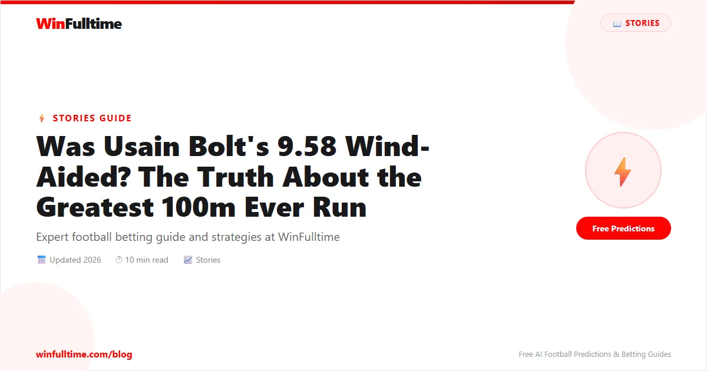

Usain Bolt's 9.58-second 100m at the 2009 World Championships in Berlin is widely regarded as the greatest sprint ever run. It shattered his own world record of 9.69 from the Beijing Olympics. It produced the fastest non-winning time in history — Tyson Gay ran 9.71, still the American record, and finished second. It was the largest improvement to the 100m world record since fully automatic electronic timing began in 1968. And yet, for nearly two decades, a persistent myth has followed it: that the record was wind-aided. It was not. Here is exactly what happened, how wind measurement works, and why the 9.58 deserves its place in history without an asterisk.
August 16, 2009. The Olympiastadion in Berlin — the same stadium where Jesse Owens won four gold medals in 1936, shattering Hitler's myth of Aryan supremacy. The atmosphere was electric. Bolt had already won his heat and semi-final with ridiculous ease, jogging the final 20 metres in the semi and still running 9.68 — which would have been a world record if not for the +2.0 m/s wind reading, exactly at the legal limit. The final was different. He ran through the line, leaned at the chest, and stopped the clock at 9.58. The scoreboard flashed the numbers, and the stadium erupted. He had beaten his own world record by 0.11 seconds — an eternity in sprinting. To put that in perspective, the difference between Bolt in first and Gay in second (9.71) was 0.13 seconds. Bolt beat the entire field by more than Gay beat the third-place finisher, Asafa Powell, who ran 9.84 in bronze.
The margins were absurd. Bolt's 9.58 was, and remains, a statistical outlier in the history of human performance — so far ahead of anything that came before that people instinctively looked for an explanation. And that is where the wind-aided myth was born.
Wind measurement in track and field is governed by strict World Athletics rules. A wind gauge is placed beside the track, 50 metres from the start line, at a height of 1.22 metres (approximately half the height of a sprinter). It measures the wind speed in the direction of the race for 10 seconds — the first 5 seconds after the gun, and the first 5 seconds after the first runner crosses the finish line. The average of those 10 seconds is the official wind reading. The legal limit for record purposes is +2.0 metres per second. Anything above that is considered wind-aided, and the time cannot be ratified as a world record.
In the 2009 100m final, the wind reading was +0.9 m/s. That is well within the legal limit — less than half the permitted maximum. For context, Bolt's 9.69 in Beijing had a wind reading of 0.0 m/s (still air). His 9.63 Olympic gold in London 2012 had a wind reading of +1.5 m/s. The 9.58 was not even the windiest legal race of his career. The +0.9 m/s reading means the wind provided approximately 0.01 seconds of assistance — a trivial amount that does not meaningfully impact the time.
• 9.72 — New York, May 2008: +1.7 m/s (legal)
• 9.69 — Beijing Olympics, August 2008: 0.0 m/s (legal)
• 9.58 — Berlin Worlds, August 2009: +0.9 m/s (legal)
• 9.63 — London Olympics, August 2012: +1.5 m/s (legal)
• Legal threshold: +2.0 m/s
• Bolt's 9.58 wind reading: +0.9 m/s — well inside the limit
The idea that Bolt's 9.58 was wind-aided persists for three reasons. First, the sheer magnitude of the improvement. Shaving 0.11 seconds off a world record in the 100m is almost unheard of. When Bolt ran 9.69 in Beijing, many experts said the limit of human potential was somewhere around 9.65. He ran 9.58 less than a year later. People could not believe it was legitimate, so they searched for external explanations. Second, the semi-final wind reading of +2.0 m/s (exactly at the limit) created confusion. Casual fans saw"wind-aided" associated with Bolt's semi and assumed the final was also wind-aided. Third, the race itself felt illegal — a man running so far ahead of everyone else, celebrating before the line, and still running 9.58. It defied belief. But defying belief is not the same as cheating.
Bolt was simply that good. His 200m world record of 19.19, set in the same championships five days later, had a wind reading of -0.3 m/s (a headwind). He ran the fastest 200m ever into a slight breeze. If the 9.58 was wind-aided, the 19.19 would have to be even more extraordinary — and yet nobody questions the 200m record in the same way.
9.58
Bolt's 100m WR — Berlin 2009
+0.9
Wind reading (legal limit: +2.0)
9.71
Tyson Gay's US record (2nd place)
19.19
Bolt's 200m WR — same championships
The 2009 100m final was not just the fastest race ever run — it was the deepest. Five men ran under 9.90 seconds. Tyson Gay's 9.71 would have won a gold medal in every single Olympics except Beijing 2008 (where Bolt ran 9.69) and London 2012 (where Bolt ran 9.63 and Gay ran 9.80 for fourth). Asafa Powell, the former world record holder, ran 9.84 and got bronze. Daniel Bailey ran 9.93 and finished fourth — a time that would have won the 2004 Olympic gold. The quality of the field makes Bolt's dominance even more staggering. He did not beat a weak field. He beat the strongest collection of sprinters ever assembled, in the best shape of their lives, and he destroyed them all.
Five days after the 100m, Bolt lined up for the 200m final. The world record was his own 19.30 from Beijing, and the speculation was whether he could break 19.20. He ran 19.19 — into a headwind of -0.3 m/s. The 200m record is, in many respects, even more impressive than the 100m record. The 100m record has been genuinely threatened several times since 2009 — Yohan Blake ran 9.69, Tyson Gay ran 9.69, Justin Gatlin ran 9.74, and multiple men have broken 9.80. The 200m record has not been seriously challenged. No one has come within 0.1 seconds of 19.19. The world list since 2009 reads 19.26 (Yohan Blake, 2011), 19.31 (Noah Lyles, 2022), 19.32 (Michael Johnson, 1996). Bolt's 200m record remains virtually untouched. And it was run into a headwind.
Pervasive myths in sport — like the belief that Bolt's 9.58 was wind-aided — affect betting markets in subtle but meaningful ways. When bettors misunderstand the fundamentals of a sport or event, they misprice probability. The belief that Bolt's record was illegitimate leads to undervaluation of sprinting markets in athletics betting, or to misplaced confidence that the record will fall easily because it was somehow artificially achieved. The same dynamic plays out in football betting all the time. Bettors routinely overvalue recent form while ignoring underlying statistics, or assume that a team's winning streak is unsustainable when the data says otherwise. Understanding how records are set — and how they are legitimately achieved — is the same skill as understanding expected goals, xG against, or home advantage adjustments. It is the difference between betting on narratives and betting on facts.
On WinFulltime, we apply the same principle to football: no myths, no narratives, no assumptions. Every prediction is based on data — current form, head-to-head records, injury reports, squad depth, and match context. If you want to bet on the 100m at the next Olympics or the Champions League final this season, the approach should be the same: look at the numbers, not the noise. Our free football predictions cover every major league and tournament, built on the same commitment to factual analysis rather than popular belief.
Seventeen years later, Bolt's 9.58 remains the world record. It has survived the doping scandals that engulfed sprinters like Gatlin and Justin Gatlin's teammate training groups. It has survived the technological advances in starting blocks, super spikes, and track surfaces. It has survived the emergence of a new generation of sprinters — Lyles, Kerley, Bromell, Jacobs, Bednarek — none of whom have come within 0.1 seconds of the mark. The closest anyone has come is Tyson Gay's wind-aided 9.69 with a +4.0 m/s tailwind in 2012, a time that would have been 9.80 in still air. In still air conditions, no man has run faster than 9.69 (Gay, Blake, Gatlin) — still 0.11 seconds slower than Bolt.
The wind-aided myth persists because the human brain struggles to accept statistical outliers. Bolt's 9.58 is an outlier — a performance so far outside the normal distribution of elite sprinting that it looks like an error. But it was not an error. It was not wind-assisted. It was not doping (he never failed a test). It was a 6-foot-5 Jamaican man with a 2.4-metre stride length, a reaction time of 0.146 seconds, a top speed of 44.72 km/h (27.8 mph), and a level of talent that may never be seen again. The +0.9 m/s wind did not give him 9.58. He gave himself 9.58. And the world has been trying to catch up ever since.
Get free football predictions based on real data, not popular belief. WinFulltime covers every major league and tournament.
Generate optimized accumulator combinations from today's AI-powered predictions. Set your target odds and get instant ticket suggestions.
Pro Ticket Builder →